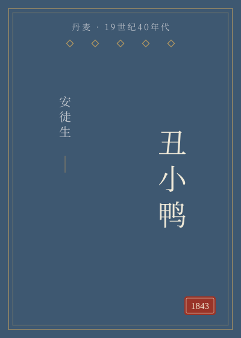
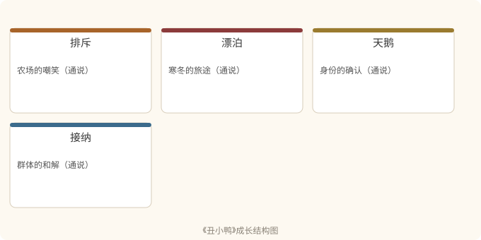

丑小鸭
一、基本信息
| 作者 | 安徒生 |
|---|---|
| 成书/出版 | 作者页注记：Britannica 语境——发表年份通说待核（1843说） Hans Christian Andersen (Danish author) — Encyclopaedia Britannica（百科全书） |
| 国别/地区 | 丹麦 |
| 时代 | 近代 · 19世纪40年代 |
| 体裁 | 童话 |
| 语言 | 丹麦语 |

《丑小鸭》成长结构图（主题·结构图）
二、创作背景
作者页注记：丑小鸭——'（Britannica 语境）'。
Britannica：安徒生——出身贫寒的童话作家（作者页语境——待核）。
题材（通说待核）：被嘲笑的'鸭子'终成天鹅——自传性寓言。
三、内容脉络
（通说待核）农场的排斥与冬天的漂泊。
（通说待核）天鹅群的接纳与'我是'的确认。
四、主要人物表
| 人物 | 身份 | 说明 |
|---|---|---|
| 丑小鸭 | 天鹅幼鸟 | （通说待核） |
五、主题与艺术特点
- 身份的自我发现（通说待核）。
- 排斥与接纳（通说待核）。
- '受苦的孩子'的寓言（作者页语境——通说待核）。
六、影响与评论
- Britannica：安徒生童话序列（作者页注记）。
Hans Christian Andersen (Danish author) — Encyclopaedia Britannica（百科全书） - Britannica：安徒生生平的寓言对应（作者页语境——待核）。
Hans Christian Andersen (Danish author) — Encyclopaedia Britannica（百科全书）
七、阅读建议
难点
- 寓言与童话的边界。
- '成长'叙事的原型。
- 《丑小鸭》（人民文学出版社《安徒生童话全集》等——通说待核）。
- 丹麦文原版（公有领域）。
安徒生代表作；与《海的女儿》对读。
八、待核实
- 1843年发表（《新童话》第一集说）待核。
- 自传性对应细节待核。
- '天鹅'意象来源待核。